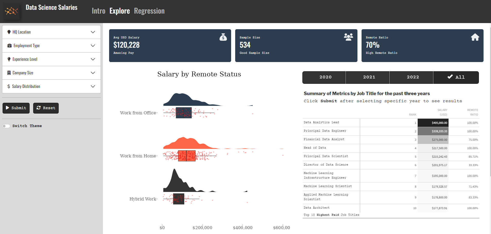
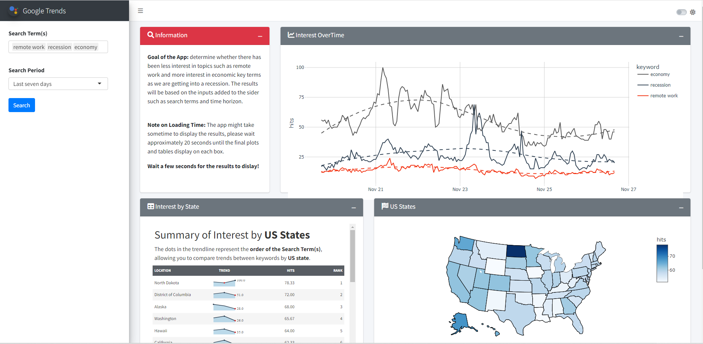
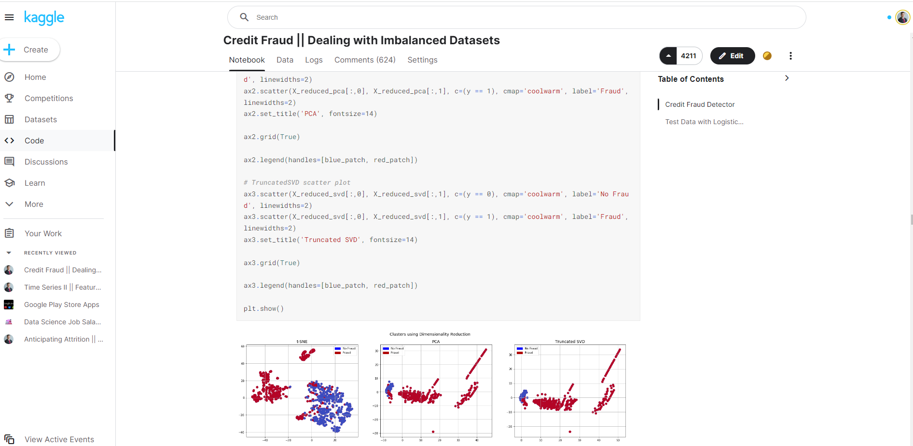

Welcome to my personal website! I'm excited to share my journey with you. Born in the Dominican Republic and proudly half German, my multicultural background ignites my passion for knowledge and adventure.
My journey in the data field began in 2016 after being inspired by the book Hands-on Machine Learning with Scikit-Learn and TensorFlow by Aurelien Geron . Leaving my homeland behind, I endeavored to learn from the brightest minds in the data industry across the globe.
Living in six different cities, from Munich to Barcelona, has not only provided unique learning opportunities but has also introduced me to incredibly talented people along the way.
When I'm not immersed in my computer, you'll often find me running, reading , meditating, or playing with my Himalayan cat.
Career Highlights
- - Worked on leading and coordinating activities related to the migration of the data infrastructure from on-premise to the cloud.
- - Contributed to the automation of operational processes saving the team manual efforts with reporting activities.
- - Developed scalable end tables through data modeling to facilitate easy access and utilization by data consumers.
- - Facilitate the design of experimentation protocols for diverse games and evaluated the outcomes of AB tests.
- - Designed comprehensive dashboards to evaluate to track financial performance from our Apps publishers, enabling account managers to swiftly identify additional market opportunities
- - Evaluate market opportunities within the African market to assess the viability of extending our scaled services under the (Next Billion Users) program.
- - Generated and conduct analysis on the weekly consolidated Eurosystem balance sheet for publication on the ECB website.
- - Delivered comprehensive reports on monetary policy securities holdings and income to Euro-area Central Banks.
- - Designed dashboards to streamline the optimization of investments in offline and online marketing channels across diverse markets.
- - Gathered stakeholder requests in an organized and systematic manner to ensure alignment with expectations.
Portfolio
-

Salaries Prediction App
Shiny web application & to forecast salaries based on different features in the job market.
-

Google Keywords App
Shiny web application & that measures the keywords google trends by connecting via Google API library.
-

Credit Fraud Detector
This notebook compares different sampling techniques to best detect credit fraud transaction. Currently, ranking 12th as the most voted work on Kaggle.